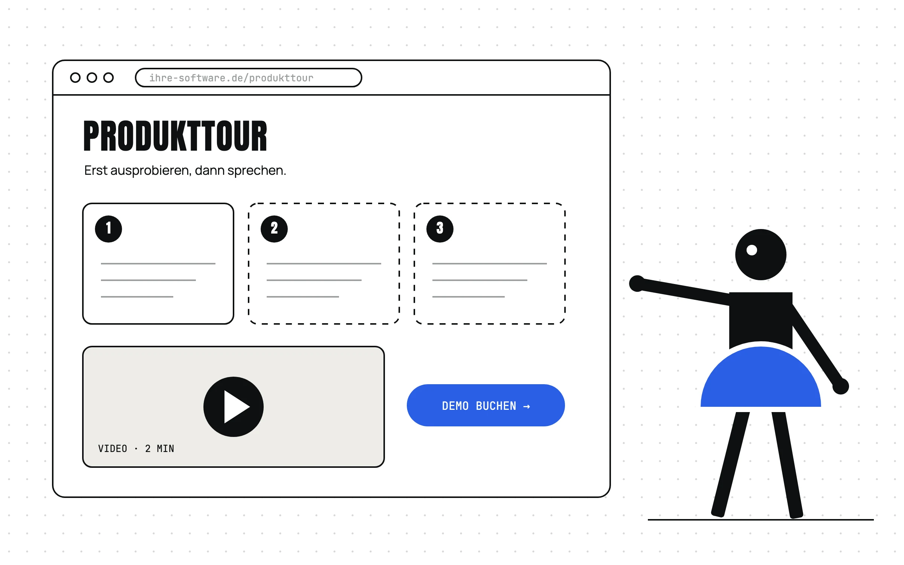
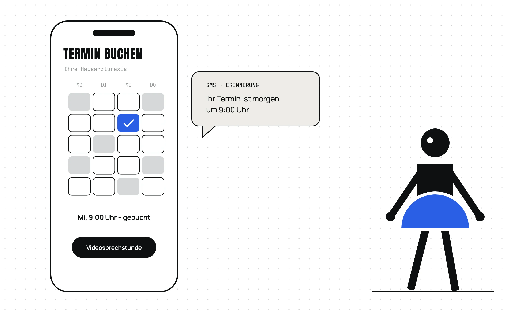
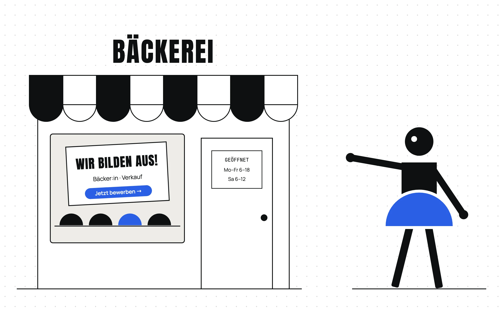

Was sollte eine Website 2027 können?
Eine Website lohnt sich, sobald sie eine Aufgabe hat – und wenn das Fundament darunter stimmt. Darum geht es hier, in drei Teilen: um die Markenidentität, um den Nutzen und um die Frage, wohin sich Websites entwickeln.

- Eine Website sollte 2027 das Angebot in Sekunden erklären, Vertrauen aufbauen, bei Google und in KI-Suchen gefunden werden, auf dem Handy funktionieren, barrierefrei sein und zu Anfragen führen. Eine Website nur zu haben, reicht nicht: In Deutschland haben 90,5 Prozent der Unternehmen mit 10 bis 49 Beschäftigten eine.1
- Das Fundament ist die Markenidentität: Warum machen Sie, was Sie machen? Wie machen Sie es? Was bieten Sie an, und für wen?
- Die Website ist die Zentrale: Social Media, Anzeigen, Suche, Google-Unternehmensprofil, Newsletter und Kundenverwaltung (CRM) sind an sie angeschlossen.
- Jede Branche braucht etwas anderes: Software muss erklärt werden, eine Arztpraxis entlastet mit Online-Terminen ihr Telefon – 64 Prozent der Deutschen ab 16 Jahren haben schon einmal einen Arzttermin online vereinbart2 –, Handwerksbetriebe suchen über eine Karriereseite Nachwuchs.
- KI verändert die Suche, aber die Website bleibt: Mit KI-Übersicht klicken Menschen seltener auf Websites, in einer US-Studie bei 8 statt 15 Prozent der Suchen.3 Die Website wird die Quelle, aus der Menschen und KI ihre Antworten holen – und der Ort, an dem Vertrauen entsteht und Anfragen ankommen.
Teil 1: Das Fundament – die Markenidentität
Bevor es bei mir um Seiten, Inhalte oder Farben geht, stehen drei ganz andere Fragen im Raum:
- Warum machen Sie, was Sie machen?
- Wie machen Sie es – und was unterscheidet Sie von den anderen?
- Was genau bieten Sie an, und für wen?
Simon Sinek nennt das den Golden Circle: erst das Warum, dann das Wie, dann das Was. Klingt simpel, ist aber echte Arbeit. Wer diese drei Fragen ehrlich beantworten kann, hat das Fundament für die eigene Marke – und für die eigene Website.
Und genau da hakt es oft. Viele Websites sehen sich zum Verwechseln ähnlich und sagen wenig. Woran liegt das? Meistens an einem dieser Punkte:
- Zu wenig oder die falschen Informationen: Besucher:innen finden nicht, was sie wissen wollen.
- Kein Weg zur Anfrage: Es fehlt eine klare Handlungsaufforderung – oder es gibt so viele, dass man nicht weiß, wohin.
- Keine Suchmaschinenoptimierung (SEO): Die Seite wird kaum gefunden.
- Kaum Markenbildung: Marke wird als Kosmetik verstanden. Farben, Schrift, Logo, fertig.
- Werte, Haltung und Sprache wurden nie geklärt.
- Die Zielgruppen sind unklar: Für wen genau ist das Angebot eigentlich?
- Der Blick auf den Markt fehlt: Was sagen die Mitbewerber – und was sagt keiner?
- Funktionen und Schnittstellen fehlen: keine Terminbuchung, kein Newsletter, keine Anbindung an Kundenverwaltung oder Social Media.
Das Ergebnis: Die Website wirkt austauschbar. Und wer austauschbar wirkt, wird ganz schnell nur noch über Preis und Leistung verglichen. Das möchte niemand.
Eine Markenidentität (Corporate Identity) besteht aus vier Teilen:
- Corporate Culture: Leitbild, Werte, Philosophie – was ein Unternehmen im Innersten ausmacht.
- Corporate Communication: Kanäle, Stimme, Tonalität – wie es spricht.
- Corporate Behaviour: Service, Verhalten, Beziehungen – wie es handelt.
- Corporate Design: Logo, Farben, Schrift, Bildwelt – wie es aussieht.
Das Design ist nur der Teil, den man sieht. Tragen kann es erst, wenn die anderen drei stehen. Deshalb fange ich bei einer Website nicht mit dem Layout an, sondern mit Analyse und Strategie: Positionierung, Zielgruppen, Mitbewerber. Erst dann bekommt Ihre Website ein Gesicht, das wirklich nur zu Ihnen passt.
Teil 2: Was eine Website heute können muss
Haben reicht nicht
Fast jedes Unternehmen hat heute eine Website. In Deutschland sind es 90,5 Prozent der Unternehmen mit 10 bis 49 Beschäftigten, bei 50 bis 249 Beschäftigten sogar 97,2 Prozent.1 Eine Website zu haben, ist also kein Vorteil mehr. Den Unterschied macht, was sie für Sie tut:
- Das Angebot in Sekunden erklären: Wer sind Sie, was bieten Sie an, für wen?
- Vertrauen aufbauen: mit Referenzen, echten Menschen, nachvollziehbaren Abläufen und Preisen zur Orientierung.
- Den Einstieg leicht machen: mit Einstiegsangeboten (Entry Offers) wie einem kurzen Kennenlerngespräch (Discovery Call) und mit Lead-Magneten wie Checklisten oder kostenlosen Informationen.
- Gefunden werden: bei Google (SEO) und in den Antworten von KI-Suchen (GEO, Generative Engine Optimization).
- Zu Anfragen führen: mit einer klaren Handlungsaufforderung – „Projekt anfragen“, „Termin buchen“, „Jetzt bewerben“.
- Auf dem Handy funktionieren: In Deutschland laufen knapp 60 Prozent der Seitenaufrufe über Mobilgeräte, Stand September 2026.4
- Gepflegt und barrierefrei sein: aktuelle Technik, aktuelle Inhalte, für alle bedienbar.
Im B2B-Geschäft wird das noch wichtiger. In einer Befragung von 646 B2B-Einkäufer:innen kaufen 67 Prozent am liebsten ohne Vertriebsgespräch, und 45 Prozent haben bei einem kürzlichen Kauf schon KI genutzt.5 Wer sich selbst informiert, braucht Informationen, die er auch findet. Und meiner Erfahrung nach landet er dafür auf Websites.
Die Website als Zentrale
Eine Website steht nicht allein. Sie ist die Zentrale, an der alles andere hängt:
- Social Media: Blogartikel werden zu Posts, Posts führen zurück auf die Website.
- Anzeigen: Google Ads und Meta Ads führen auf passende Zielseiten (Landingpages).
- Suche: Google und KI-Suchen führen Interessierte auf die Website.
- Google-Unternehmensprofil: zeigt Bewertungen und verlinkt auf die Website.
- Events und Webinare: werden auf der Website, in Social Media und im Newsletter beworben.
- Newsletter: neue Artikel und Termine gehen per E-Mail raus.
- Kundenverwaltung (CRM): Anfragen und Anmeldungen landen gesammelt an einem Ort.
- Auswertung (Tracking): zeigt, was wirkt und wo Besucher:innen abspringen.
Social Media
⇄ AustauschBlogartikel werden zu Posts, Posts führen zurück auf die Website.
- TikTok
Ads
→ auf die WebsiteAnzeigen führen auf passende Landingpages.
- Google Ads
- Meta Ads (Facebook, Instagram)
SEO & GEO
→ auf die WebsiteGefunden werden: bei Google (SEO) und in KI-Antworten wie ChatGPT (GEO).
- Google-Suche
- KI-Suche
Google-Profil & Bewertungen
⇄ AustauschIhr Google-Unternehmensprofil zeigt Bewertungen und verlinkt auf die Website.
- Google Maps
- Bewertungen
Events & Webinare
⇄ AustauschBeworben auf der Website, in Social Media und im Newsletter.
- Anmeldung
- Webinar-Tool
Ihre Website
Newsletter
⇄ AustauschNeue Artikel und Events gehen per Newsletter raus.
- rapidmail
- Brevo
- HubSpot
CRM
⇄ AustauschAnfragen und Anmeldungen landen in der Kundenverwaltung (Customer Relationship Management).
- HubSpot
- Kontakte
- Verkaufschancen
Tracking & Analyse
← aus der WebsiteZeigt, was wirkt und wo Besucher abspringen.
- Google Analytics
- Search Console
Kunden
⇄ AustauschAnfragen kommen über Formulare, der Kontakt läuft über alle Kanäle.
- Anfragen
- Kontakt
Kundenbindung · Wachstum
Ein Weg zum Beispiel: Blogartikel → LinkedIn-Post → Newsletter → Kundenbindung
Ein Beispiel: Ein Blogartikel erscheint auf der Website, wird zum LinkedIn-Post, geht im Newsletter raus – und bringt Leser:innen zurück auf die Website. Aus einem Text werden so drei Kontakte mit Ihrer Kundschaft.
Drei Beispielbranchen, drei Aufgaben
Was eine Website leisten muss, hängt stark von der Branche ab. Drei Beispiele:
Softwareentwicklung: erklären, zeigen, ins Gespräch kommen

Große Software-Systeme sind teuer und erklärungsbedürftig. So etwas kauft niemand nach einem kurzen Blick auf die Startseite. Die Website muss deshalb den ganzen Weg begleiten – vom ersten Interesse bis zum Gespräch:
- Nach Bedarf erklären statt nach Funktionen: Szenarien und Anwendungsfälle (Use Cases) zeigen, welches Problem die Software löst – für welche Branche und für welche Rolle.
- Ausprobieren lassen: Interaktive Produkttouren und kurze Videos zeigen die Software, bevor jemand eine Demo bucht. Laut einem Bericht des Anbieters Navattic, der solche Demos selbst verkauft, bieten 18 Prozent von rund 5.000 untersuchten B2B-Software-Websites schon einen Zugang zu einer interaktiven Demo an.6
- Zielgruppen gezielt ansprechen: eigene Seiten für Branchen und Rollen. Die Geschäftsführung fragt nun mal anders als die IT.
- Lead-Magneten anbieten: Ein Lead-Magnet ist ein wertvolles Angebot, das man im Austausch für Kontaktdaten bekommt.7 Typisch sind ein Fachbericht zum Herunterladen (Whitepaper), eine Checkliste, ein Kosten- oder ROI-Rechner, ein Webinar, ein Testzugang oder eine kostenlose Bedarfsanalyse.
So entsteht ein Weg zur Anfrage (Funnel): erst aufmerksam werden (Blog, Anwendungsfälle), dann vergleichen (Tour, Video, Whitepaper, Rechner), dann entscheiden (Testzugang, Demo-Termin, Referenzen). Nur laufen Kaufentscheidungen selten so geradlinig. Gartner beschreibt sechs Aufgaben8, zwischen denen Einkäufer:innen hin- und herspringen – und bei jeder kann die Website helfen:
| Aufgabe (Gartner) | Was die Website anbietet |
|---|---|
| 1. Problem erkennen (Problem Identification) | Blogartikel, Anwendungsfälle: „Kennen Sie das?“ |
| 2. Lösungen erkunden (Solution Exploration) | Leistungsseiten, Produkttour, Video |
| 3. Anforderungen festlegen (Requirements Building) | Checkliste, Whitepaper, Vergleich der Pakete |
| 4. Anbieter auswählen (Supplier Selection) | Referenzen, Preise zur Orientierung, Kostenrechner |
| 5. Bestätigen (Validation) | Kundenstimmen, Zertifikate, Testzugang |
| 6. Einigkeit im Team herstellen (Consensus Creation) | Material zum Weiterleiten: Zusammenfassung als PDF, Ansprechperson, Termin |
Für die Website heißt das: An jeder Stelle braucht es einen nächsten Schritt.
Arztpraxis: erreichbar sein, ohne ans Telefon zu müssen

Eine Arztpraxis ist voll, das Telefon klingelt ununterbrochen. Wozu dann noch eine Website? Ganz einfach: Sie entlastet das Telefon. 64 Prozent der Deutschen ab 16 Jahren haben schon einmal einen Arzttermin online vereinbart. Der am häufigsten genannte Vorteil: nicht auf die telefonische Erreichbarkeit der Praxis angewiesen zu sein – das sagen 84 Prozent derer, die Online-Termine nutzen oder sich das vorstellen können.2 Gebucht wird dabei oft über Plattformen wie Doctolib; ein Viertel bucht über die Website der Praxis. Die eigene Website ist der Ort, an dem die Praxis selbst bestimmt, was Patient:innen sehen.
Ein Beispiel aus meinem Alltag: Bei meinem Hausarzt in Leipzig kann ich mich früh morgens für eine Videosprechstunde anmelden, wenn ich akut etwas habe – ohne in die Praxis zu müssen. Und einen Termin buche ich dort jederzeit online.
Noch ein Beispiel: Meine Zahnärztin erinnert mich einen Tag vorher per SMS an den Termin. Seitdem habe ich keinen einzigen Termin mehr verpasst. Bei meinem Hausarzt, zu dem ich regelmäßig zur Kontrolle gehe, gibt es das nicht. Dabei ist genau das der Wow-Effekt, den eine gute Nutzererfahrung (User Experience) erreichen will: Ich muss an nichts denken, das System denkt mit. Genau so entsteht Kundenbindung – bei so einer Praxis bleibe ich. Eine kleine Stellschraube mit riesigem Effekt.
Und damit bin ich nicht allein: Wer Online-Termine nutzt oder sich das vorstellen kann, nennt die automatische Erinnerung in der Bitkom-Befragung zu 43 Prozent als Vorteil.2 Es lohnt sich für beide Seiten. Ich habe bei einer anderen Zahnärztin einmal einen Termin verpasst und musste über 50 Euro Ausfallgebühr zahlen. Für die Praxis dürfte eine Erinnerung heißen: weniger leere Termine, weniger Ausfall, weniger Telefonate.
Das lohnt sich für alle, die feste Sprechzeiten haben, den ganzen Tag an ihrem Arbeitsplatz sind und Kundschaft empfangen: Praxen, Kanzleien, Beratungen, Werkstätten. Eine Online-Terminbuchung arbeitet, während Sie arbeiten.
Und morgen? Denkbar ist, dass eine KI im Akutfall erste Fragen beantwortet und an den richtigen Termin weiterleitet. Das ist heute noch Zukunftsmusik – und bei Gesundheitsthemen eine Frage von Haftung und Datenschutz.
Wichtig: Für Arztpraxen gelten besondere Regeln für Werbung und für den Datenschutz. Lassen Sie das vor dem Start rechtlich prüfen.
Handwerk und Bäckerei: Nachwuchs finden

Braucht eine Bäckerei mit Stammkundschaft überhaupt eine Website? Für den Verkauf vielleicht nicht. Für die Personalsuche fast immer. Der Zentralverband des Deutschen Handwerks geht von rund 200.000 offenen Stellen im Handwerk aus.9 Eine Karriereseite mit Ausbildungsplätzen, Einblicken ins Team und einem kurzen Bewerbungsformular ist dafür ein wichtiger Kanal. Dazu kommen Öffnungszeiten, die Vorbestellung für Torten oder das Wochenende und der Kontakt.
Wer braucht keine Website?
Ehrlich gesagt: nicht jeder Betrieb. Ein Google-Unternehmensprofil mit Öffnungszeiten, Telefonnummer und Bewertungen kann genügen, wenn
- der Betrieb sehr lokal ist und von Laufkundschaft lebt – etwa der Schuster um die Ecke,
- er voll ausgelastet ist und niemanden sucht – weder Kundschaft noch Personal,
- das Angebot nichts erklären muss.
Aber Vorsicht: Ein Profil auf einer Plattform gehört Ihnen nicht. Google hat zum Beispiel 2024 die kostenlosen Websites im Unternehmensprofil abgeschaltet.10 Wer nur auf fremde Plattformen setzt, hängt von deren Entscheidungen ab.
Teil 3: Wohin geht die Website?
„In zwei Jahren gibt es keine Websites mehr“
Diesen Satz höre ich immer wieder: Bald läuft alles über KI, es gibt nur noch ein Eingabefeld, und wir sprechen nur noch mit der Maschine. Stimmt das?
Was stimmt: Die Suche verändert sich gerade stark.
- Ohne KI-Übersicht15 %
- Mit KI-Übersicht8 %
- Weniger Klicks: Zeigt Google eine KI-Übersicht an, klicken Menschen deutlich seltener auf Websites – in einer US-Studie bei 8 statt 15 Prozent der Suchen.3 Nach einer Schätzung des SEO-Software-Anbieters Ahrefs bekommt das erste Suchergebnis bei Informationssuchen mit KI-Übersicht am Desktop rund 58 Prozent weniger Klicks als erwartet.11
- KI im Alltag: 34 Prozent der Deutschen ab 16 Jahren nutzen KI mindestens einmal pro Woche.12 In der ARD/ZDF-Medienstudie 2026 nutzen gut zwei Drittel der 14- bis 29-Jährigen KI-Tools mindestens wöchentlich.13
- KI-Agenten: Programme, die selbstständig Websites bedienen, Formulare ausfüllen und Termine buchen, gibt es schon – sie arbeiten aber noch unzuverlässig.14
Was sich nicht belegen lässt: dass die Website verschwindet. Die Fachleute der Nielsen Norman Group gehen sogar vom Gegenteil aus.14
Auch im Vertrieb rechnet Gartner nicht mit einem Siegeszug der Maschinen: Bis 2030 werden 75 Prozent der B2B-Einkäufer:innen menschlichen Kontakt der KI vorziehen – vor allem bei komplexen und folgenreichen Käufen.15 KI hilft beim Informieren. Die Entscheidung suchen Menschen bei Menschen. Für Ihre Website heißt das: Sie liefert die Informationen – und führt zum persönlichen Gespräch.
- Menschen brauchen weiter Oberflächen: Selbst wenn KI-Agenten viele Aufgaben übernehmen – „humans will still need interfaces“.14
- Vertrauen: 54 Prozent der Deutschen halten Informationen aus KI für wenig oder nicht vertrauenswürdig.13 In einer kleinen Studie der Nielsen Norman Group mit neun Teilnehmenden prüften Menschen KI-Antworten mit der klassischen Suche nach – und besuchten weiter Websites.16
- Die KI braucht Quellen: KI-Antworten stützen sich auf Inhalte aus dem Web. In einer Auswertung der Agentur Seer Interactive hatten Suchanfragen, bei denen eine Marke in der KI-Übersicht genannt wurde, höhere Klickraten – ob die Nennung die Ursache ist, lässt sich daraus nicht ableiten.17
- 34 %der Deutschen ab 16 Jahren nutzen KI mindestens einmal pro WocheBitkom, April 2026
- gut ⅔der 14- bis 29-Jährigen nutzen KI-Tools mindestens wöchentlichARD/ZDF-Medienstudie 2026
- 54 %der Deutschen halten Informationen aus KI für wenig oder nicht vertrauenswürdigARD/ZDF-Medienstudie 2026
- 75 %der B2B-Einkäufer:innen werden bis 2030 menschlichen Kontakt der KI vorziehenGartner-Prognose, August 2025
Die Website wird also weniger Schaufenster für Zufallsbesuche. Sie wird zur Quelle, aus der Menschen und KI ihre Antworten holen – und zu dem Ort, an dem Vertrauen entsteht und Anfragen ankommen.
Wie Sie sich vorbereiten
- Eigene, fachkundige Inhalte statt Allerweltstexte: Google nennt einzigartige Inhalte als Grundlage für die KI-Suche.18 Schreiben Sie, was nur Sie wissen.
- Konkrete Antworten auf echte Fragen: Was kostet das? Wie lange dauert es? Für wen ist das?
- Saubere Technik: schnell, gut auf dem Handy, klar gegliedert.
- Barrierefreiheit: Klare Überschriften, beschriftete Formulare und sauberer Code helfen Menschen – und auch KI-Agenten, die Websites lesen.14 Seit dem 28. Juni 2025 gilt außerdem das Barrierefreiheitsstärkungsgesetz für bestimmte Produkte und Dienstleistungen, darunter Angebote im elektronischen Geschäftsverkehr; Kleinstunternehmen mit Dienstleistungen sind ausgenommen. Ob es für Sie gilt, sollten Sie prüfen lassen.19
- Google-Unternehmensprofil pflegen: Öffnungszeiten, Fotos, Bewertungen.
- Eigene Kanäle aufbauen: Newsletter und LinkedIn machen Sie unabhängiger von Suchmaschinen.
- Erfolg an Anfragen messen, nicht an Klicks: Weniger Besuche können trotzdem mehr Anfragen bringen.
Und was ist mit „llms.txt“, der Datei, die KI-Diensten den Weg weisen soll? Google unterstützt sie nicht, und kein KI-Dienst hat öffentlich erklärt, sie zu nutzen.20 Mein Rat: abwarten.
Fazit
Eine Website braucht ein Fundament: eine klare Markenidentität. Dann bekommt sie eine Aufgabe – erklären, Vertrauen aufbauen, gefunden werden und zu Anfragen führen. Wie sie das am besten tut, hängt von Ihrer Branche ab. Und auch wenn KI die Suche verändert: Die Website bleibt die Quelle, auf die Menschen und Maschinen zurückgreifen.
Sie wollen wissen, was eine Website für Sie kosten würde? Probieren Sie den Kostenrechner aus – oder fragen Sie Ihr Projekt an.
Häufige Fragen
Was sollte eine Website 2027 können?
Sie sollte das Angebot in Sekunden erklären, Vertrauen aufbauen, den Einstieg leicht machen, bei Google (SEO) und in KI-Suchen (GEO) gefunden werden und zu Anfragen führen. Dazu muss sie auf dem Handy funktionieren, gepflegt und barrierefrei sein. Das Fundament ist eine klare Markenidentität.
Was ist der Golden Circle?
Der Golden Circle ist ein Modell von Simon Sinek: erst das Warum, dann das Wie, dann das Was. Wer beantworten kann, warum er macht, was er macht, wie er es macht und was genau er für wen anbietet, hat das Fundament für seine Marke und für seine Website.
Warum sehen sich viele Websites so ähnlich?
Häufige Gründe sind zu wenig oder die falschen Informationen, kein klarer Weg zur Anfrage, fehlende Suchmaschinenoptimierung und eine Marke, die nur als Farben, Schrift und Logo verstanden wird. Oft wurden Werte, Haltung, Sprache und Zielgruppen nie geklärt, der Blick auf die Mitbewerber fehlt, und Funktionen wie Terminbuchung oder Newsletter fehlen. Wer austauschbar wirkt, wird schnell nur noch über Preis und Leistung verglichen.
Braucht jedes Unternehmen eine Website?
Nein. Ein Google-Unternehmensprofil mit Öffnungszeiten, Telefonnummer und Bewertungen kann genügen, wenn der Betrieb sehr lokal ist und von Laufkundschaft lebt, voll ausgelastet ist und niemanden sucht und das Angebot nichts erklären muss. Ein Profil auf einer Plattform gehört Ihnen aber nicht: Google hat 2024 zum Beispiel die kostenlosen Websites im Unternehmensprofil abgeschaltet.
Warum braucht eine Arztpraxis eine Website?
Weil sie das Telefon entlastet. Laut einer Bitkom-Befragung vom Dezember 2025 haben 64 Prozent der Deutschen ab 16 Jahren schon einmal einen Arzttermin online vereinbart, und wer Online-Termine nutzt oder sich das vorstellen kann, nennt am häufigsten als Vorteil, nicht auf die telefonische Erreichbarkeit der Praxis angewiesen zu sein. Eine automatische Erinnerung vor dem Termin dürfte für die Praxis weniger leere Termine, weniger Ausfall und weniger Telefonate bedeuten. Für Werbung und Datenschutz gelten bei Arztpraxen besondere Regeln.
Gibt es wegen KI bald keine Websites mehr?
Das lässt sich nicht belegen. Die Suche verändert sich: Zeigt Google eine KI-Übersicht an, klicken Menschen seltener auf Websites – in einer US-Studie des Pew Research Center von 2025 bei 8 statt 15 Prozent der Suchen. Doch KI-Antworten stützen sich auf Inhalte aus dem Web, und die Nielsen Norman Group geht davon aus, dass Menschen weiter Oberflächen brauchen. Die Website wird zur Quelle, aus der Menschen und KI ihre Antworten holen.
Wie bereite ich meine Website auf KI-Suchen und KI-Agenten vor?
Mit eigenen, fachkundigen Inhalten statt Allerweltstexten und mit konkreten Antworten auf echte Fragen: Was kostet das, wie lange dauert es, für wen ist das? Dazu kommen saubere Technik und Barrierefreiheit, denn klare Überschriften, beschriftete Formulare und sauberer Code helfen Menschen und KI-Agenten, die Websites lesen. Messen Sie den Erfolg an Anfragen, nicht an Klicks.
Bringt eine llms.txt-Datei etwas?
Dafür gibt es bisher keinen Hinweis. Google unterstützt llms.txt nicht, und laut TechWyse (Juni 2026) hat kein KI-Dienst öffentlich erklärt, die Datei zu nutzen. Deshalb gilt vorerst: abwarten.
Gilt das Barrierefreiheitsstärkungsgesetz für meine Website?
Das Barrierefreiheitsstärkungsgesetz gilt seit dem 28. Juni 2025 für bestimmte Produkte und Dienstleistungen, darunter Angebote im elektronischen Geschäftsverkehr. Kleinstunternehmen mit Dienstleistungen sind ausgenommen. Ob es für Sie gilt, sollten Sie prüfen lassen.
Was kostet eine Website bei STUDIO AAH!?
Eine neue Website beginnt bei STUDIO AAH! bei 2.450 € netto, auch als Onepager; der Launch ist enthalten. Jede Unterseite kostet 190 € mit Texten und Bildern. Einen ersten Kostenvoranschlag gibt der Kostenrechner auf studio-aah.de, ausführlich erklärt Teil 1 der Reihe „Website-Fragen“ Preise, laufende Kosten und Dauer.
Was soll Ihre Website können?
Stellen Sie sich Ihr Projekt im Kostenrechner zusammen – in einer Minute haben Sie einen ersten Kostenvoranschlag. Oder wir sprechen im kostenlosen Erstgespräch über Ihr Vorhaben.

Anna Härtelt
Gründerin von STUDIO AAH! in Leipzig. UX/UI-Designerin, Strategin und Webentwicklerin, seit 2020 selbstständig, mehr als 40 Projekte – von der Website für Selbstständige bis zum Redesign für mittelständische Unternehmen.
Quellen
- Eurostat: Unternehmen mit Website (isoc_ciweb) , Datenstand 27.02.2026
- Bitkom: Zwei Drittel vereinbaren Arzttermine online , 22.12.2025
- Pew Research Center , 22.07.2025
- Statcounter: Desktop vs Mobile vs Tablet, Germany
- Gartner: Sales Survey Finds 67% of B2B Buyers Prefer a Rep-Free Experience , 09.03.2026
- Navattic: State of the Interactive Product Demo 2026
- Haufe Akademie: Lead Magnet (Glossar)
- Gartner: Gartner Says the Marketing-to-Sales Handoff Should No Longer Exist , 09.10.2018 (sechs Aufgaben im B2B-Einkauf)
- ZDH: Berufliche Bildung stärken , 03.11.2025
- Dr. Web: Google schaltet die Business Profile Websites ab , 2024
- Ahrefs: AI Overviews Reduce Clicks , 2026
- Bitkom: Ein Drittel nutzt KI mindestens einmal pro Woche , 28.04.2026
- ARD/ZDF-Medienstudie 2026: Bericht HORIZONT/dpa , 22.09.2026
- Nielsen Norman Group: AI Agents as Users , 10.04.2026
- Gartner: By 2030, 75% of B2B Buyers Will Prefer Sales Experiences that Prioritize Human Interaction Over AI , 25.08.2025
- Nielsen Norman Group: How AI Is Changing Search Behaviors , 15.08.2025
- Seer Interactive: AIO Impact on Google CTR , 04.11.2025
- Search Engine Journal: Google's Official Advice on Optimizing for AI Overviews & AI Mode , 21.05.2025
- Bundesfachstelle Barrierefreiheit: Barrierefreiheitsstärkungsgesetz
- TechWyse: John Mueller zu llms.txt , 04.06.2026